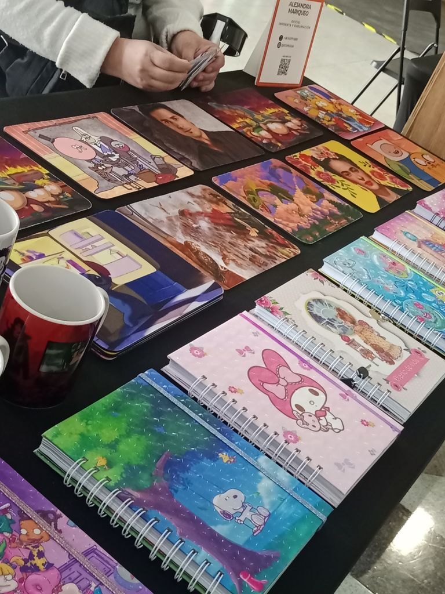

Del dolor más grande nació la fuerza más linda.
Hace 10 años, la vida me enfrentó a una gran pérdida: quedé viuda cuando mis hijos aún eran pequeños. En medio del dolor y la incertidumbre, tuve claro algo muy profundo: quería ser una mamá presente, acompañarlos y demostrarles que, incluso en los momentos más difíciles, siempre se puede volver a empezar.
Buscando una manera de estar con ellos y salir adelante, nació mi impulso de emprender. Comencé con lo que tenía a mano. Con el tiempo descubrí mi pasión por el diseño y fui perfeccionando nuevas técnicas. Así nació Eco Pilgua, un rincón donde cada producto está hecho con el corazón, reflejando crecimiento, cariño y resiliencia.
Hoy, Eco Pilgua es más que un emprendimiento; es el resultado de convertir el dolor en arte.

